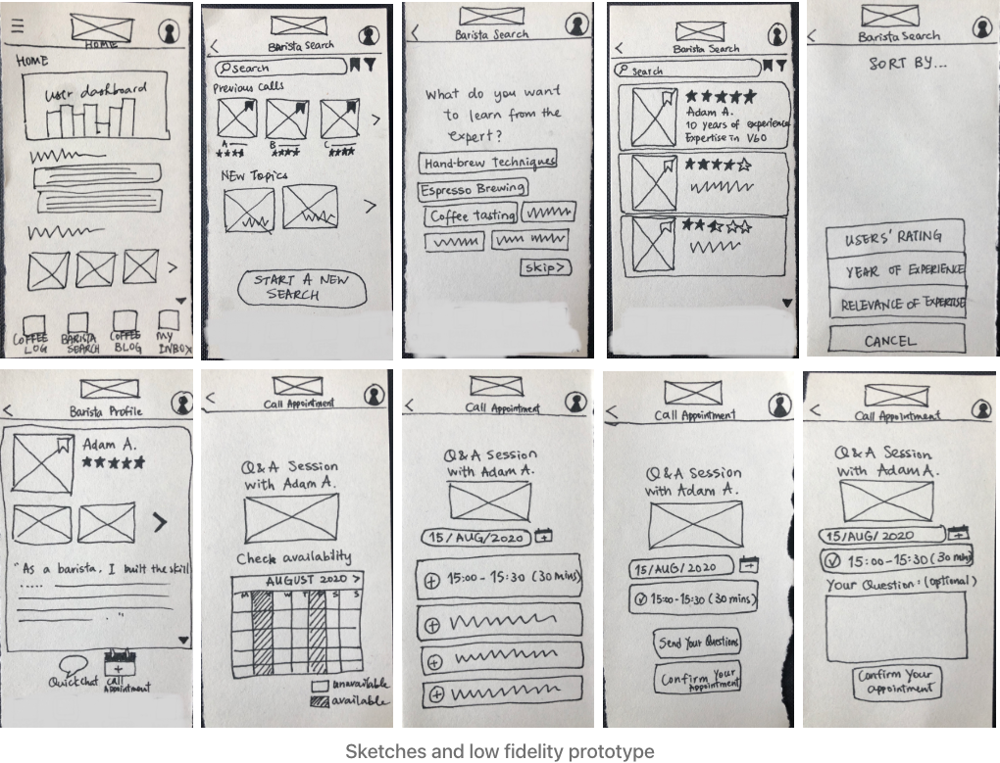
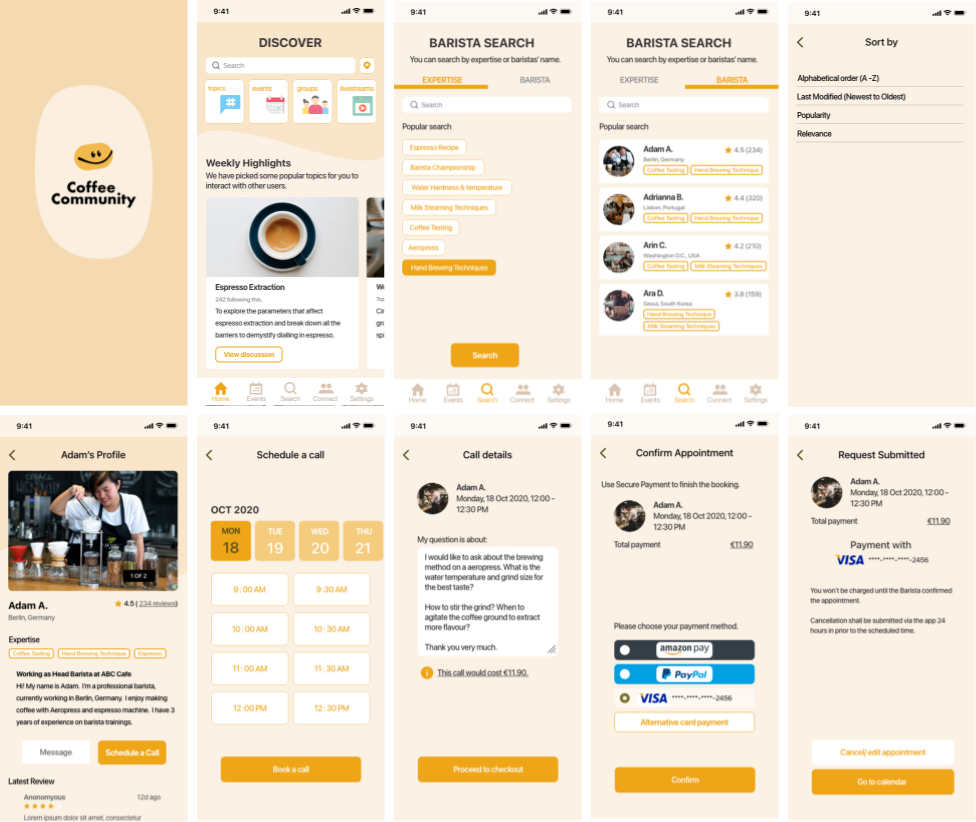
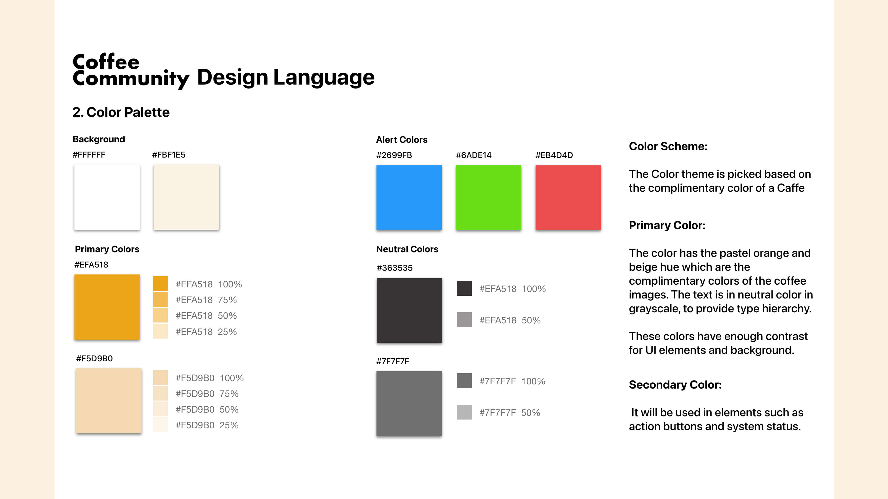
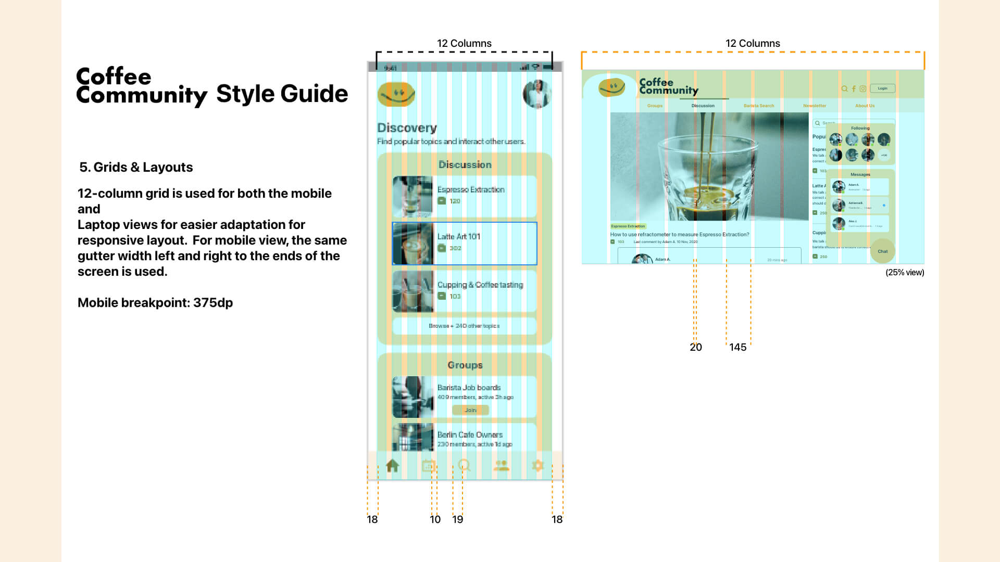
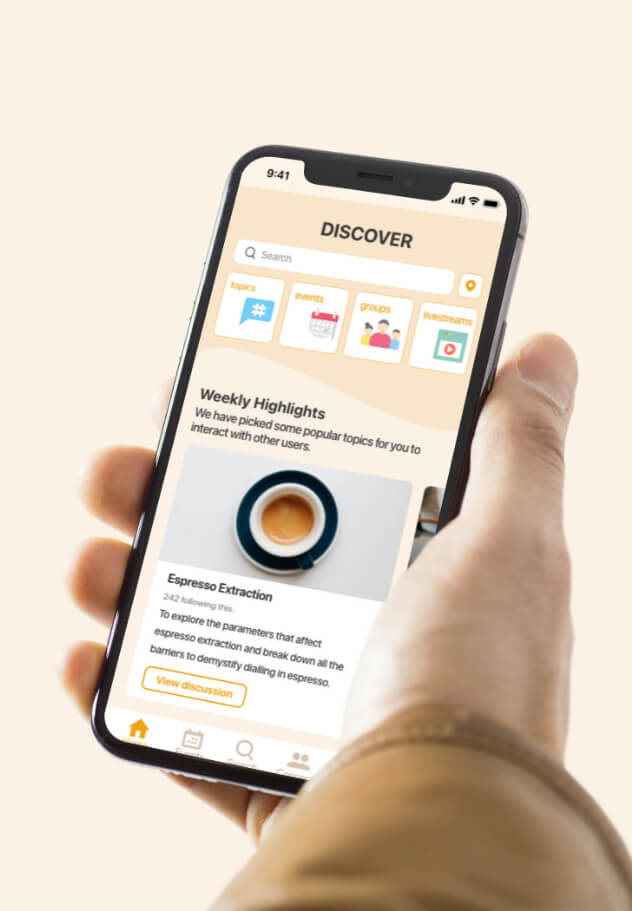

Time Frame: July 2020 - Jan 2021 Client: CF Course Project
Project Brief:
I have worked in the coffee industry for 8 years and always felt the need for an open and trustworthy
platform that everyone can seek and share coffee knowledge outside the cafe. The goal of this app is to
create a trustworthy space where users can ask questions and receive answers about coffees from
specialty
coffee baristas.
Problem Statement:
Coffee enthusiasts brewing at home need a way to consult with coffee experts through a platform where
they
can post questions and chat with professional baristas and the wider coffee community. We will know this
to
be true when we see more than 30% of the users booking a video call session with baristas with the app.
Design Process:
User Research and Data Analysis
I have approached some regular customers of my company, who are interested in coffee and consume
coffee
often. I invited them to a user survey and interview regarding my coffee app. Afterwards, the data
is
analysed with the affinity mapping method.
Creating User Personas
Creating Site infrastructure
Rapid Prototyping
With the sitemap, wireframes were quickly sketched out on paper, which easily visualised the basic
layout. This low fidelity prototype allowed me to identify what information should be displayed and
where to display them. Then I redid prototyped the mid and high fidelity screens, which increased in
level of detail after each round.


Usability Testing and Preference Test
Participants reacted and interviewed with screen sharing software. Then, the test data was
summarised
and analysed with affinity mapping and rainbow spreadsheet by finding their pain points and
negative
feedbacks.
Also, A/B Test was conducted to further understand the users and make better design decisions.
Style Guide:


Design documents and a style guide were created to uphold visual integrity along the iteration processes.
Final Design:
Mockups on mobile devices for different features.

Takeaways:
This first UX design project has been a challenging and fun experience and many insights were
discovered
within the iteration.
Firstly, iterating the prototype is the best way to figure out workable ways to solve a problem. As for
the
final iteration of the app, it provided not only the feature to connect with the expert, but also users
are
involved in a community where users can connect and ask questions beyond physical locations.
Secondly, there can be multiple possible solutions for the answer from the project brief, but what is
more
important is the journey of how we try to understand the problem and how the design improves with better
knowledge of what the user needs.
Lastly, working as a UX designer is a key connection between users, research and development team. UX
designers need to plan and consider the timeframes and the approach of how to conduct research, test and
make decisions. In this project, I was working alone, but it ignited my curiosity of how a team of UX
designers would work.
For the workable prototype, please refer to the link below:
XD
Prototype
For the detail of the case study, you can refer to my behance.